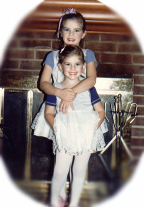
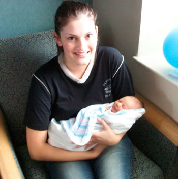

| Colleen Elana Craig, the second child of Joel and Bev Craig, was born on June 2nd, 1982 in Manassas, VA. August 15th, 1982 she and her sister both recieved a catholic baptism in Frederick, MD, following the tradition of their father. Tragedy, unfortunately, struck Colleen at an early age when her father died from diabetes in 1985. However, three years later Colleen received a loving new dad when her mother married Ray Greenfield. In 1991 Ray was transfered to Atlanta, GA and moved his family with him to their new suburban home of Alpharetta. |
 Colleen dressed-up for Halloween with her older sister Cara. |
|
 |
Colleen graduated Centennial High School in 2000 and she completed her certification as an esthetician in 2004. She wed Zach Sycks on May 9, 2008. She also enjoys spending time with her friends and her family, especially her many pets. |